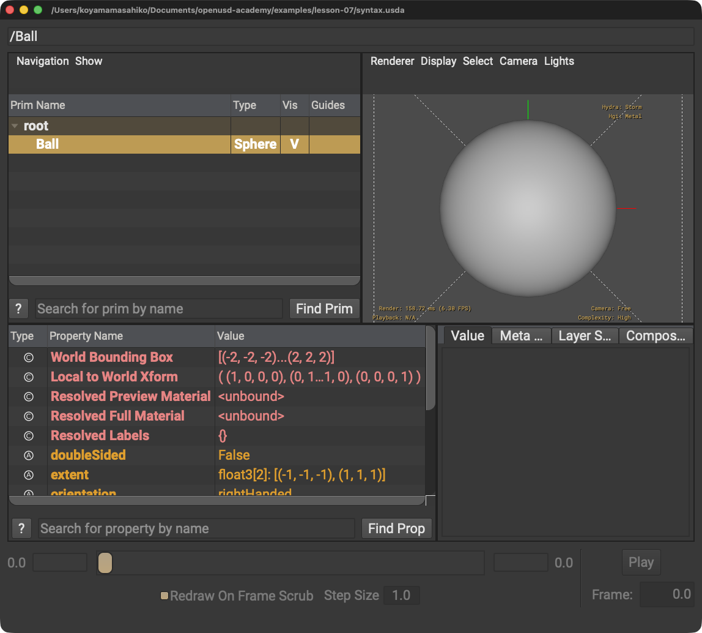

型と名前を逆にする
誤: def Ball "Sphere"
解決策: 型を先、名前を引用符内に書きます。
LESSON 07 · AUTHORING
一つのPrim定義を左から順に読みます
今日これだけ
公式情報に基づく説明
USDAは人が読めるUTF-8テキスト形式です。Primは階層を作り、PropertyはPrimの情報を保持します。
USDA
#usda 1.0
def Sphere "Ball"
{
double radius = 2
}#usda 1.0は識別行です。defはPrimを定義するSpecifier、Sphereは型、"Ball"は名前です。doubleは値の型、radiusはAttribute名、=は右の値を指定します。

def Sphere "Ball"とdouble radius = 2をusdviewで開いた画面。左上の階層でroot → Ballと型Sphereを確認できます。Diagram
Python
from pxr import Usd, UsdGeom
stage = Usd.Stage.CreateNew("syntax.usda")
ball = UsdGeom.Sphere.Define(stage, "/Ball")
ball.CreateRadiusAttr(2)
stage.Save()引用符は文字列、丸括弧は入力、カンマは入力の区切りです。Path /Ballの先頭のスラッシュはpseudo-rootから始まることを示します。
USDA → Python mapping
USDA
def Sphere "Ball"↓Python
UsdGeom.Sphere.Define(stage, "/Ball")USDA
double radius = 2↓Python
ball.CreateRadiusAttr(2)Beginner notes
よくある間違い
誤: def Ball "Sphere"
解決策: 型を先、名前を引用符内に書きます。
原因: 左右の個数が一致していません。
解決策: 内側から一組ずつ確認します。
Glossary
Official references
確認日: